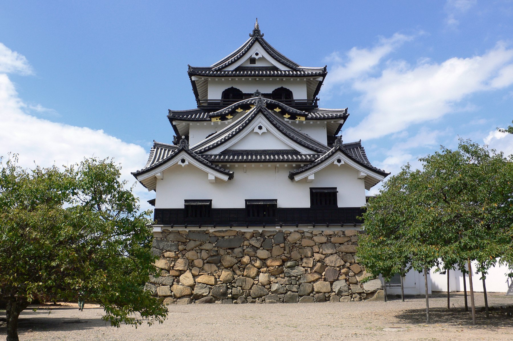
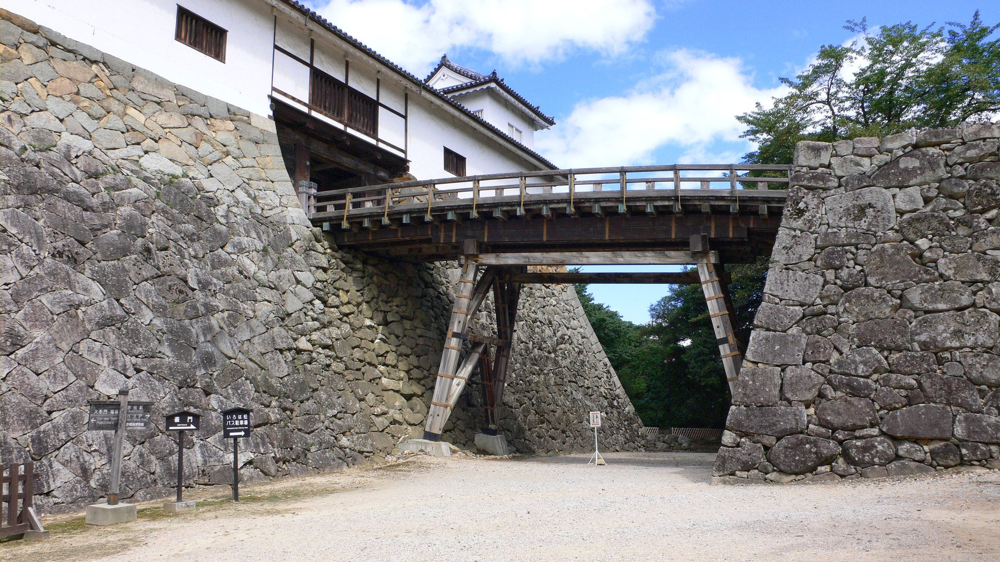
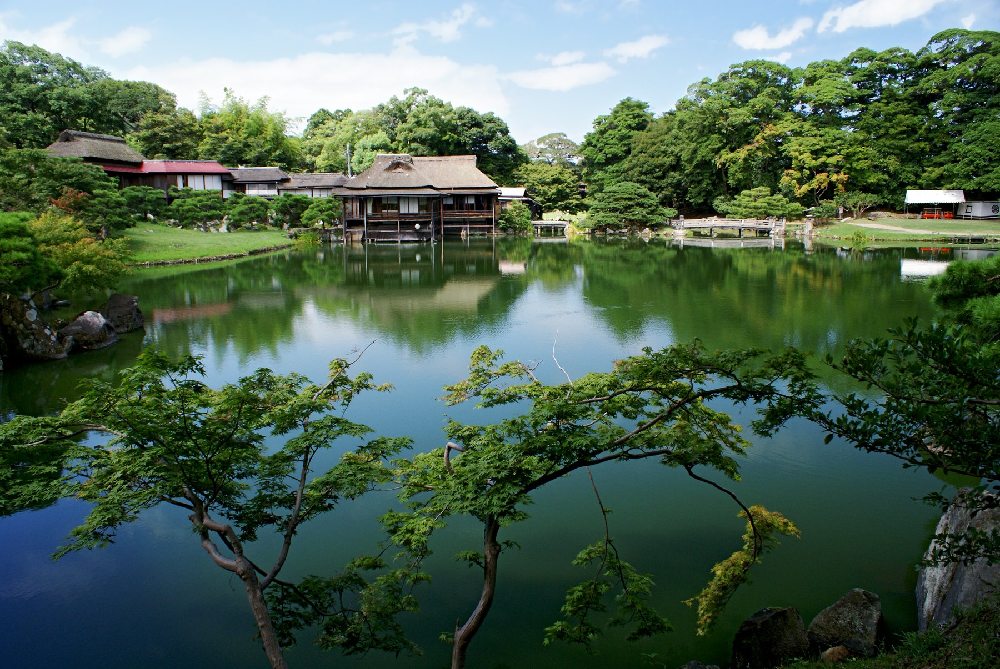
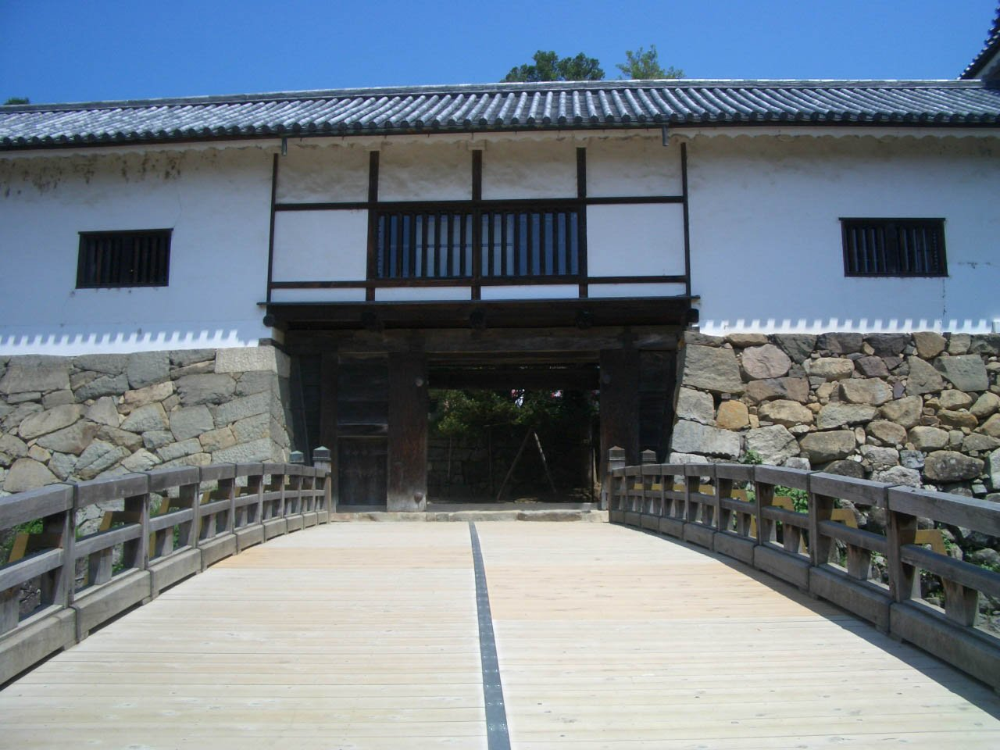
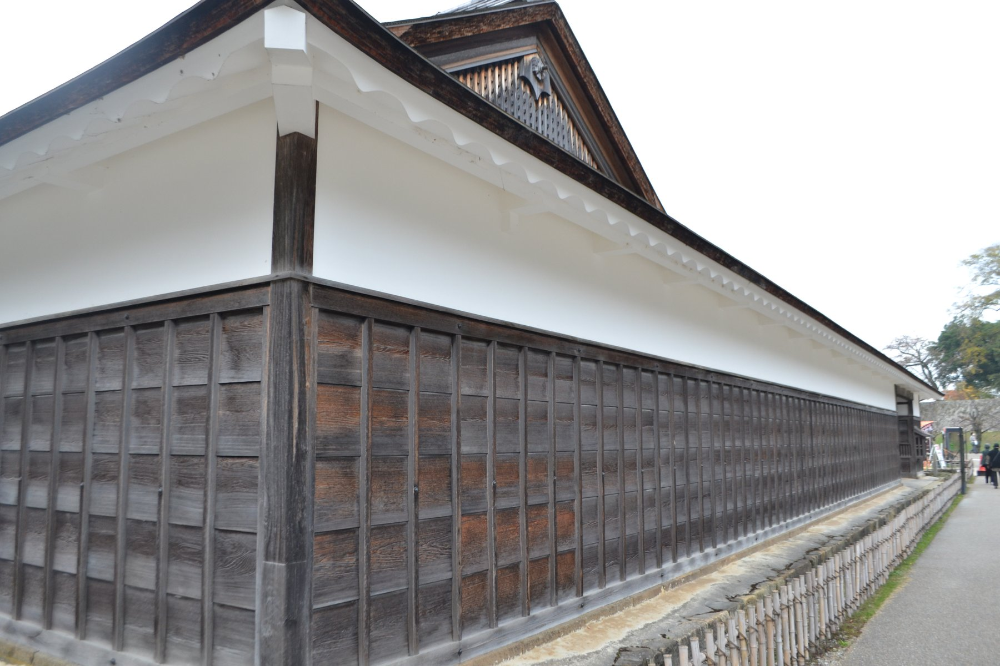
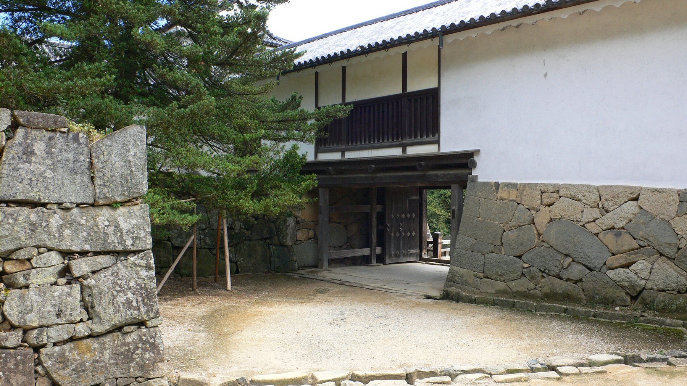
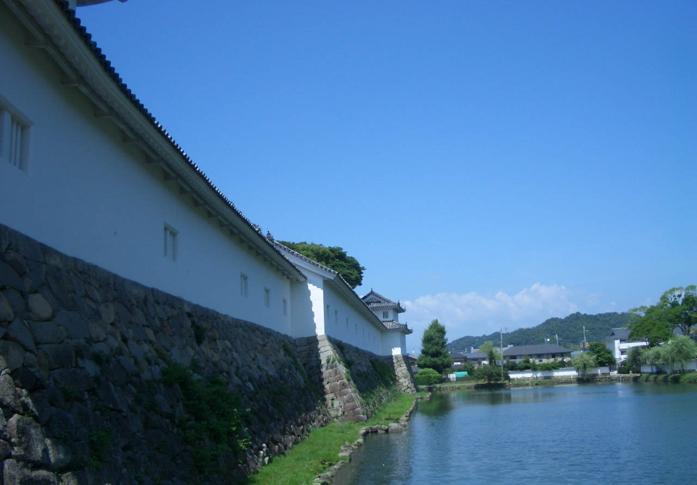
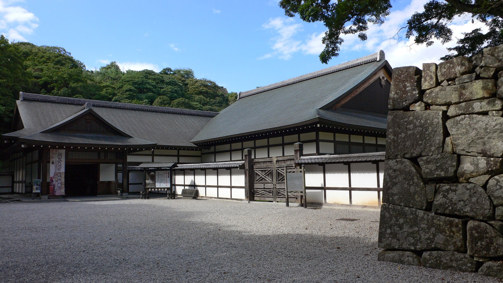
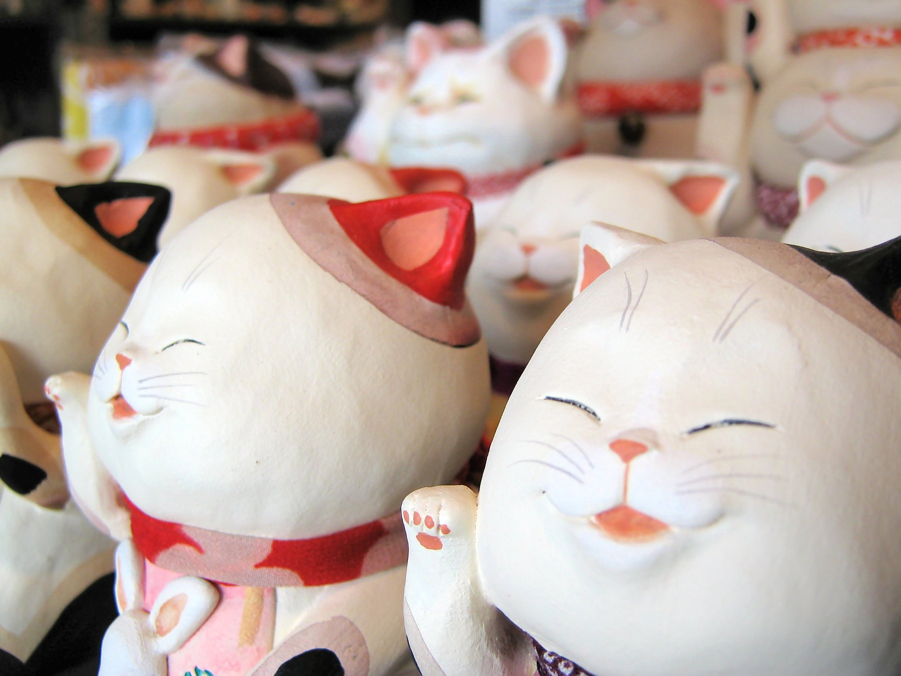

Built from the borrowed parts of other castles,
layered with gables until it looked nothing like a patchwork at all —
a guide to the keep that turned salvage into elegance.
Admission fees, opening hours and access arrangements described in this book are subject to change.
Always check the official website for the latest information before visiting.
Hikone Castle official site: https://hikonecastle.com/
| Name | Hikone Castle (Hikone-jo) — also known as Konki-jo, the Golden Tortoise Castle |
|---|---|
| Location | 1-1 Konkicho, Hikone, Shiga Prefecture |
| Type | Architecture — the keep, the attached turret and the multi-bay turret are all designated National Treasures |
| National Treasure | Designated 1952 |
| The keep | Three roofs, three floors over a basement, tower type; about 20.5m including the stone base |
| Founded | Building began 1603; substantially complete around 1607 |
| Present form | Preserves the early Edo-period castle of Ii Naotsugu and Ii Naotaka |
| Official site | https://hikonecastle.com/ |
Hikone is the castle that proves a National Treasure does not need a single, unified design. Its buildings were gathered from castles that no longer exist — and the result is one of the most decorative keeps in Japan.
Ii Naomasa distinguished himself at the Battle of Sekigahara and was rewarded with Sawayama, the former domain of Ishida Mitsunari. Naomasa is remembered for the Ii Red Devils, the unit that rode into battle in crimson-lacquered armour — but wounds taken at Sekigahara caught up with him, and he died in 1602 before he could build a castle of his own.
It was his eldest son, Ii Naotsugu, who chose the new site on Mount Hikone (also called Mount Konki) and began construction in 1603. The castle was substantially complete by around 1607.
What makes Hikone unusual is how many of its buildings carry a tradition of having been moved here from other castles:
The Taiko Gate Turret is the strangest case of all: when it was dismantled for repair, the timber itself showed it had begun life as the gate of some other castle — but no one has ever identified which one. Under the Tokugawa shogunate’s system of shared construction labour, Hikone was finished using material salvaged from the castles being abandoned all around it. That lack of a single, unified origin is exactly what the castle is.

In the winter and summer campaigns of the Siege of Osaka (1614–1615), Naotsugu’s younger brother Ii Naotaka distinguished himself in the fighting. Headship of the family passed to him as a result, and from then until the Meiji era the Ii family governed Hikone domain as its hereditary lords.
After the Meiji Restoration, castles across Japan fell under the abolition decree, and Hikone came close to sharing their fate. In 1878, an imperial progress to the Hokuriku region brought Emperor Meiji through Hikone — and by this point, tradition holds, scaffolding for the keep’s demolition had already been erected.
Okuma Shigenobu, who was travelling with the imperial party (some accounts describe him as a distant cousin of the emperor), is said to have urged that the keep be spared. The emperor’s decision called the demolition off, and the castle survived.
Exactly who persuaded the court to save the keep is not fully settled — the Okuma Shigenobu story is the best known, but other versions exist, and the details have never been pinned down. What every account agrees on is the closeness of the call: Hikone, like Himeji, is a castle that survived on the strength of one person’s intervention at exactly the right moment.
The keep is not the only thing worth seeing. Around 1677, the fourth lord, Ii Naooki, laid out a stroll garden centred on a pond, modelled on the celebrated views of Lake Biwa — the garden known today as Genkyuen. It was rebuilt in 1813 as a retirement residence for the eleventh lord, Naonaka, and survives today essentially in that form.

Hikone’s keep has three roofs and three floors — among the smallest of the five National Treasure keeps. And yet the exterior is worked over with an unusually generous mix of gable forms: plain gables, hip-and-gable roofs, and curved karahafu gables, layered one against another. Ornamental katomado windows, with their distinctive flame-shaped profile, appear on the first and second floors. Where Himeji reads as balanced and restrained, Hikone is a small building made to look busy on purpose — decoration standing in for scale.
The main bailey is guarded by the Tenbin Turret. A bridge crosses a dry moat cut into the hillside and leads to a pair of matching two-storey turrets joined by a long connecting turret — a shape that, seen from the front, resembles a set of balance scales, which gives the turret its name. Cut the bridge and the dry moat isolates the main bailey completely, stalling any attacker in their tracks. A perfectly symmetrical design that is also a working piece of defence — this is the single feature at Hikone most worth stopping for.

As Chapter 1 described, Hikone’s buildings each carry their own history. Where Himeji was designed from the ground up under one coherent plan, Hikone is an assembly of parts gathered from castles across the region. The keep, the Tenbin Turret and the Taiko Gate Turret each wear a slightly different face precisely because of where they came from. That mismatched parts were made to function as a single working castle is, in itself, a demonstration of just how far the craft of castle-building had advanced.
Most surviving Japanese castles have kept only a keep, or a keep and a turret or two — the surrounding buildings and moats are almost always gone. Hikone still has its keep, attached turret and multi-bay turret, and beyond them the Tenbin Turret, Taiko Gate Turret and the western bailey’s triple turret — all designated Important Cultural Properties — along with an almost intact inner and middle moat. The castle’s stables, too, survive: a rare example of a castle stable still standing anywhere in Japan. Taken together, Hikone is one of the few places that still shows an Edo-period castle as it actually was — not just a keep, but a moated, turreted, gardened town in miniature.

| Plan | Time | What you see |
|---|---|---|
| Keep only | About 1 hour | Omotemon Bridge to the keep to Kuromon Gate |
| Standard | 1.5–2 hours | Keep plus Genkyuen |
| Unhurried | 2–3 hours | All of the above plus Hikone Castle Museum |
The stairs inside the keep are steep, so wear shoes you can climb in and carry a bag that leaves both hands free. Hikonyan, the castle’s mascot, appears within the grounds three times a day — check the official website for the current schedule and locations.


Every gate on the way to the keep asks something different of you — a bridge here, a turn there. By the time the keep itself comes into view above the Taiko Gate Turret, you have already walked through most of what made this castle hard to attack.
| Open | 8:30–17:00 (last admission 16:30) |
|---|---|
| Admission | 1,000 yen for adults (high school age and above); 300 yen for primary and middle school students |
| Access inside | Open year-round; the interior of the keep can be visited. Genkyuen garden is included on the same grounds |
| Official site | https://hikonecastle.com/ |
Fees and hours change. Please check the official website before you travel.
| Nearest station | JR Hikone Station |
|---|---|
| On foot | About 15 minutes from the station’s west exit |
| By car | Paid car parks nearby |
| By train | About 5 minutes by JR from Maibara Station to Hikone Station |
| Spring | Cherry blossom against the keep; fresh green in Genkyuen too |
|---|---|
| Summer | Deep green along the moat set against the keep |
| Autumn | Autumn colour in Genkyuen; the keep mirrored in the pond is the season’s best sight |
| Winter | Clear air sharpens the layered gables of the keep |
Genkyuen, the pond garden built to borrow the keep as its backdrop, is the natural pairing with the castle itself — and it is included on the same admission ticket. Beyond the garden, the museum and the old castle town are both an easy walk from the main gate.


Running from Kyobashi, just outside the castle, this street is lined with white-walled, black-latticed shopfronts built to evoke the Edo-period castle town. It is the easiest way to spend an unhurried hour after the castle itself — browsing, and eating.
The Taiko Gate Turret’s hidden origin, the exact join where a moved building meets one built on site — these are details easiest to notice once you already know the story. A second walk through the castle, guided by Chapter 1, tends to reveal far more than the first.
The photographs in this book are used under public domain dedications, CC0, or Creative Commons Attribution licences. Copyright in each photograph remains with its photographer or rights holder.
CC BY 2.0: https://creativecommons.org/licenses/by/2.0/
CC BY 2.5: https://creativecommons.org/licenses/by/2.5/
Admission fees, opening hours and access arrangements are subject to change. Always check the official website of each site before visiting. The information here reflects the time of writing, and no guarantee is made as to its accuracy or completeness.
The Five National Treasure Castles, Volume Four
Only five castle keeps in Japan are designated National Treasures:
Himeji, Matsumoto, Inuyama, Hikone and Matsue. This series visits each of them in turn.